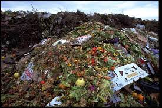

"There are people in the world so hungry,that God cannot appear to them except in the form of bread."
-Mahatma Gandhi.
Excessive Food Listing Portal For Food Wastage.
This topic has a great concern in this era of modernization and advancement. We all know about the conditions and effects of food wastage but we are also involved in this activity in some or the other way. This article will provide you with the best of the knowledge on food wastage and the circumstances that rise due to our irresponsibility.
What is Wastage of Food?
This topic is not unknown to everyone. One or in the other form we all are responsible for this situation of our society. Except few people who work for the welfare and campaign against the wastage of food, majority are involved in this vulnerable activity. The amount of food which is discarded or left by us that goes to the dustbin or to the garbage is known as waste food and this process is known as wasting of food.
BFCN (Barilla Center for Food and Nutrition) defines food waste as the waste or food losses that occur during industrial processing, distribution, and consumption.
Consequences of Wasting of Food
There are numerous situations that arise due to the wasting of food. These are as follows-
- One of the top contributors to food wastage is because of a lack of appropriate planning on the consumer part. This causes the loss of Biodiversity at a global level.
- The environment become dirty as cooked or roasted food spoils the nature of the soil and spreads pungent and stinky smell.
- Under privileged people are prone to these waste foods, which becomes dirty due to interaction of different kind so fbacteria and animals resulting into the threat to their health physically as well as mentally.
- The food produced and then later goes to waste is estimated to be equivalent to 3.3 billion tons of greenhouse gas emission, accelerating the impacts of climate change.
Statistics on Food Wastage
According to the recent census on food supply, safety, and wastage in India, some statistics representing the status and standard of food economically and financially are shown below-

“Cutting food waste is a delicious way of saving money, helping to feed the world and protect the planet.”
-Tristram Stuart.